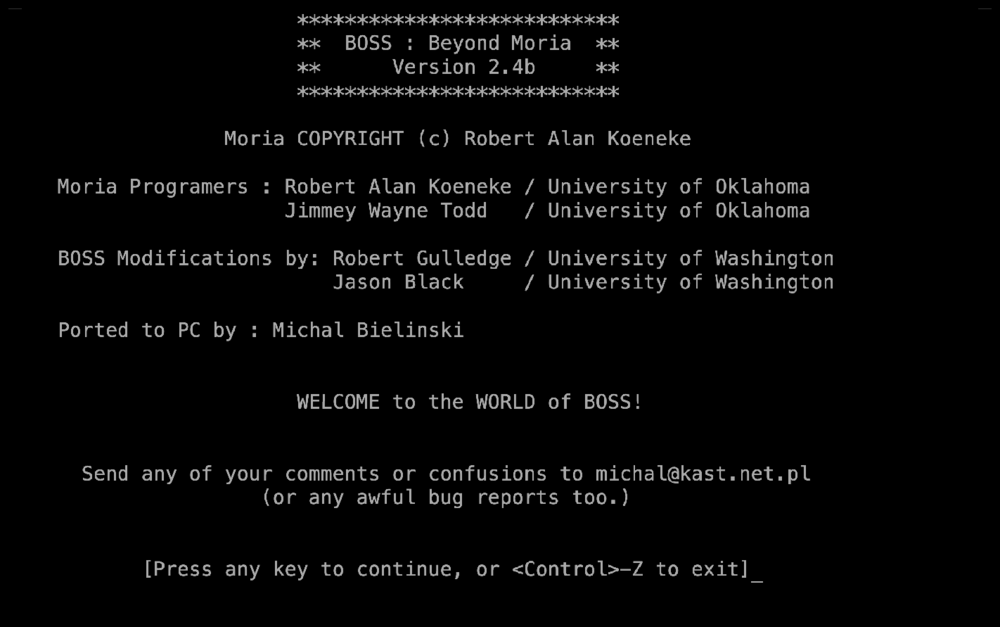
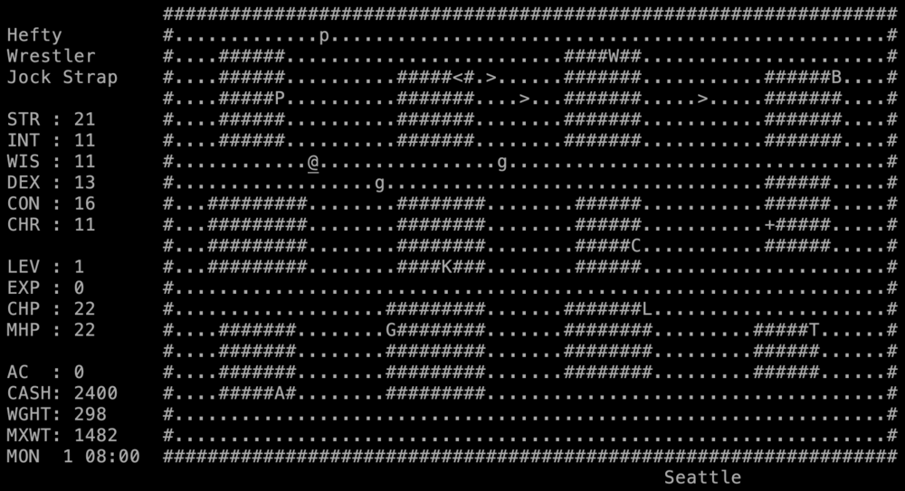
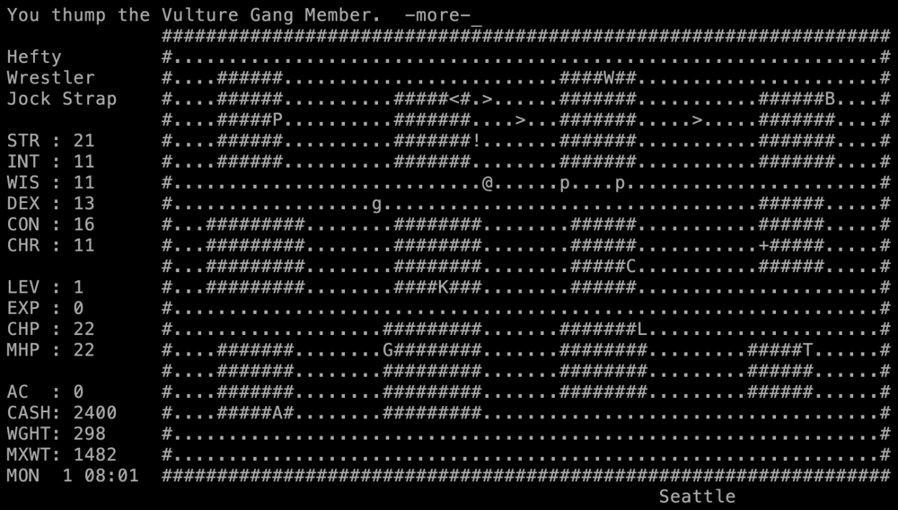
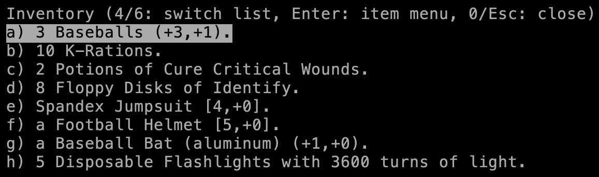

BOSS started from VMS Moria, the Pascal original by Robert Koeneke and Jimmey Wayne Todd, by way of a copy modified at SUNY by Bill Palter and Nick B. Triantos. Robert Gulledge and Jason Black at the University of Washington then replaced Tolkien with modern America: magic became science, orcs became gang members, Middle-earth became eight US cities. It is a sibling of Umoria, not a descendant; see the family tree.
Played here: BOSS 2.4b, Michal Bielinski’s PC port, compiled with Free Pascal to WebAssembly.
Credits
Robert Alan Koeneke
Moria
Jimmey Wayne Todd Jr.
Moria
Bill Palter, Nick B. Triantos
SUNY Moria modifications
Robert Gulledge (RLG)
BOSS
Jason Black (cloister bell)
BOSS, FAQ
Michal Bielinski
PC port
Screenshots

Title: “BOSS : Beyond Moria, Version 2.4b”, with the full credits.

First steps: Seattle, day 1, 08:00. A hefty wrestler in a jock strap, with 2,400 in cash.

A fight in the street: “You thump the Vulture Gang Member.”

Starting kit: baseballs, K-rations, Floppy Disks of Identify, a spandex jumpsuit, a football helmet and an aluminum bat.
Trivia
The authors wanted a Moria you can win “in a weekend, instead of in a few weeks”. (BOSS FAQ, 1992)
The evil aliens are called Daysians. The FAQ says the name is a joke and leaves it to you to find. (BOSS FAQ, 1992)
Monsters and items live in data files, so admins could rename the Green Daisyan Lieutenant after their system administrator without recompiling. (BOSS FAQ, 1992)
Danny Dollar runs the bank: “honest, but stingy as heck”, with interest paid weekly. (BOSS FAQ, 1992)
Some monsters give you a “social disease”. It stops certain potions from working; the medical clinic cures it, and every cure costs more. (BOSS FAQ, 1992)
The Vic-20 in the computer table is rated at 1%: “(Sounds right, doesn't it?)” (manual)
What's unique
Parody setting: science instead of magic, floppy disks instead of scrolls, pop-culture monsters.
Eight cities instead of one town: Seattle, Boise, Denver, Kansas City, Chicago, Detroit, Pittsburgh, New York City. To take the bus to the next one you must kill that city's mob boss (a P at 500 metres).
Time limit: 100 game days before the Boss takes over the world.
A bank with deposits and loans, potion mixing (M), a kill list (k), and a berserk rage for wrestlers (b).
Beating the Boss is not the end: another may take his place, and your score counts how many you beat.
Code dive
Original: VMS Pascal on the University of Washington VAXes, like its parent Moria. About 24,500 lines in boss.pas and its include files.
Monsters, items, classes and skill names are in text data files (dat/), unusual for its time.
PC port: Michal Bielinski, Turbo/Free Pascal for DOS and Linux.